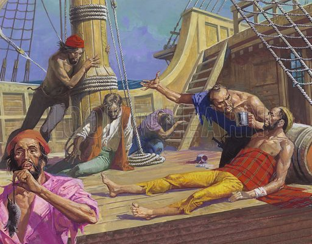

Where It All Began
Spain
1518

After initial refusals from the King Charles of Spain, he managed to gain his approval and sponsors his expedition to the Spice Islands.
Setting Sail
Spain
September 20, 1519

Magellan and his five ships finally sets sail from the port of Seville, Spain. The ships' names were Trinidad, San Antonio, Concepcion, Victoria, and Santiago.
The First Tragedy
Patagonia
Winter, 1519-1520
- While anchored in St. Julian Bay, Patagonia, the crew mutinied and who was led by: Juan de Cartegna, Gaspar Quesada, and Antonio de Coca.
- It was also around this time where they lost the Santiago ship.
A Historical Landmark
Chile
October 21, 1520
Magellan and his crew discovers a strait, to which leads directly to the Pacific Ocean, and was later on named as the “Strait of Magellan”
The Famine
Pacific Ocean
December 1520 - March 1521

The crew endured three months of starvation and malnutrition while attempting to cross the Pacific Ocean.
Land Ho!
Philippines
March 16, 1521
Magellan’s expedition lands onto the island of Homonhon, and officially arrives in the Philippines.
First Contact
Philippines
March 18, 1521
- Magellan’s crew meet and form alliances with local Filipino leaders, including Rajah Colambu of Butuan Island.
- Magellan’s fleet offered spices in order to honor them.
- Moluccas (The Spice Islands)
And so it begins…
Philippines
March 31, 1521
- The first Catholic mass was held in the Philippines, which marked the beginning of Christianity in the Philippines
- This was also attended by Rajah Colambu and Rajah Siagu.
The Social Network
Philippines
April 7, 1521
Magellan and his crew arrives at the Island of Cebu, where he sends his slave and interpreter Enrique, who he brought with in a meeting with Rajah Humabon
Faith Anew
Philippines
April 14, 1521
- Rajah Humabon and about 500 others are baptized into Christian faith
- Rajah Humabon’s wife, who was later given the name of Juana, was gifted the Santo Niño icon by Magellan. This icon later became a revered religious artifact.
Display of Power
Philippines
April 26, 1521
- On this day, Chief Zula of Mactan came to the Spaniards in order to pay tribute to them, however, another chief prohibits him.
- An ultimatum was sent for Chief Lapu-Lapu of Mactan, and refuses to adhere to it.
- Magellan, along with his crew, went into battle.
The Battle of Mactan
Philippines
April 27, 1521

- Magellan was offered an aid of forces from Rajah Humabon, however, Magellan refuted this, as this was all a show of force from the Spaniards
- Magellan and 49 of his men waded into the shores of Mactan to go against Lapu-Lapu’s forces.
- Magellan was killed in battle, and his forces was forced to retreat. Marking a significant event in Philippine History.
Journey’s End
Spain
September 6, 1522
The expedition’s remaining ship, Victoria, completes the circumnavigation of the globe, and returns to Spain.
The Beginning of 333 Years
Philippines
April 27, 1565
- An expedition ordered by King Philip II, was set to rediscover the islands that were explored by Magellan and his crew.
- This expedition was led by Miguel López de Legazpi, and in this expedition, they rediscovered the Santo Niño icon.